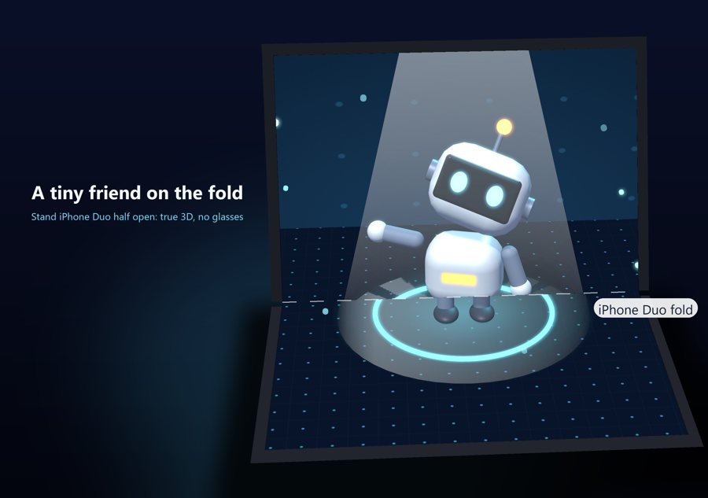
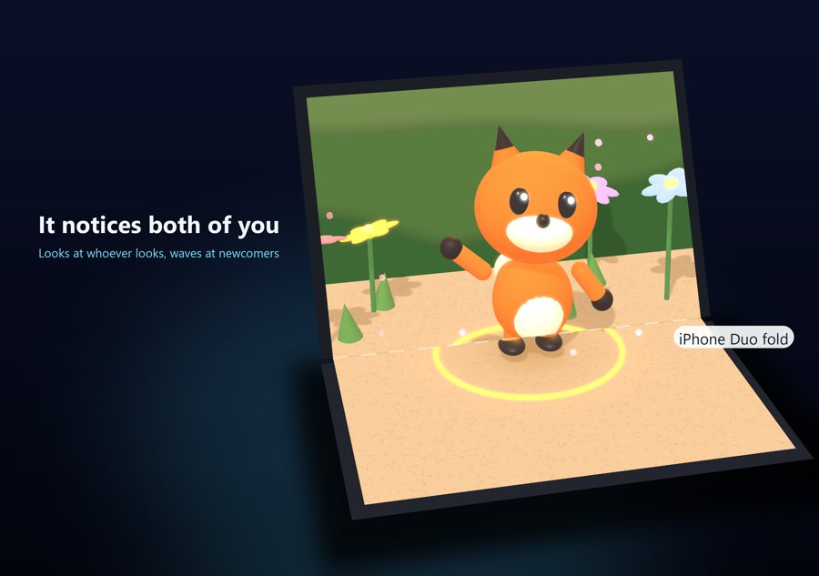
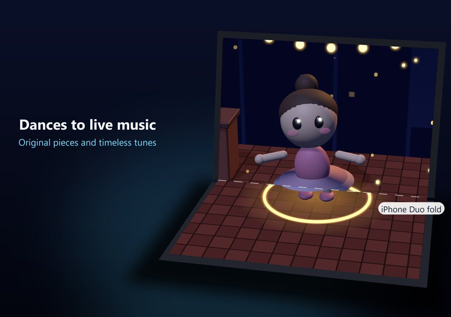
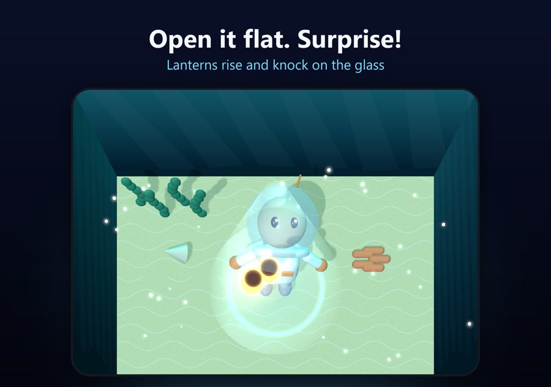
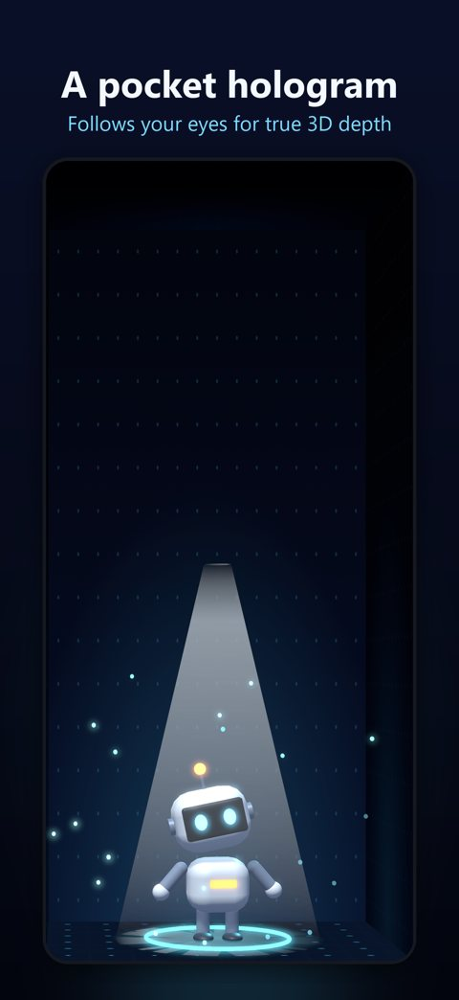
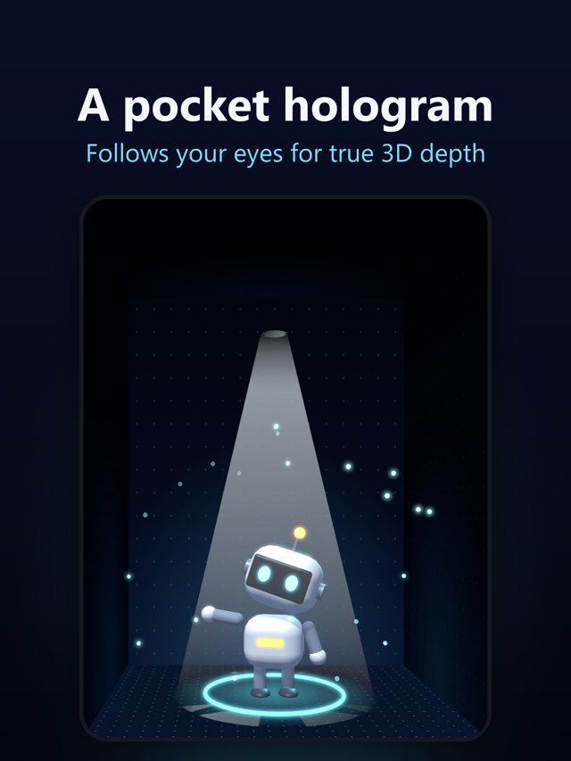

A pocket hologram for iPhone Duo
Stand iPhone Duo half open like a tiny laptop and a little 3D friend appears on the fold. Tinyfolk follows your eyes with the front camera and draws the scene from exactly your point of view, so the character seems to stand right there in front of you. Open it flat for a surprise. On every iPhone and iPad, the screen becomes a window into a little box.






The phone becomes a tiny stage
Questions
Is there a hologram app for iPhone Duo?
Tinyfolk stands a tiny 3D character on the fold of a half-open iPhone Duo and draws both halves from your point of view with head tracking, so it looks like a small hologram on your desk.
How does the 3D effect work without glasses?
The front camera estimates where your eyes are. Each half of the display is rendered with an asymmetric (off-axis) frustum from that point, so the virtual scene stays fixed in space as you move your head.
Can two people watch at once?
A flat screen can only be exactly right for one eye point, so the view follows one person at a time and hands over smoothly. The character notices both and turns between them.
Does Tinyfolk work on other iPhones and iPad?
Yes. The screen becomes a window into a little box; lay it flat to look down into a well. Tilting the phone gives depth even without the camera.
Does Tinyfolk record or upload my face?
No. Camera frames are analysed on the device and discarded immediately. Nothing is stored or sent. Head tracking is optional.
What does Tinyfolk Pro add?
Four more friends, three more stages, four more pieces of music and screen recording, for one payment shared with your family. No subscription.